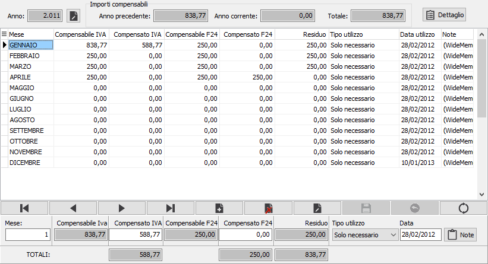
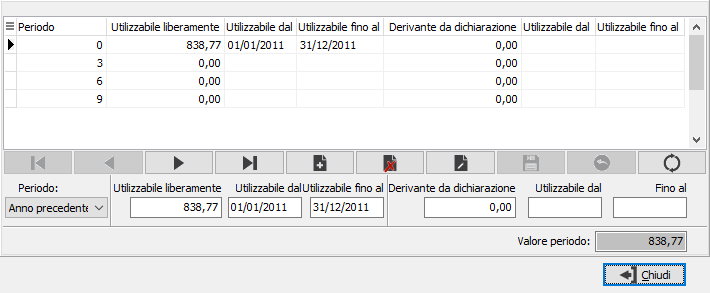

Crediti Iva
Si tratta di un programma di servizio relativo al modulo Contabilità base che permette la manutenzione dei valori relativi al credito Iva derivante dalla liquidazione.
Sulla tabella vengono riportati l'anno, il mese, il tipo di utilizzo del credito, la divisa, l'importo, la data di utilizzo e delle note; è inoltre possibile inserire i crediti Iva utilizzati nel modello F24.

Tramite il bottone viene aperta la maschera di Dettaglio crediti compensabili, tale dettaglio deve essere compilato per la gestione dei crediti Iva da compensare in F24.

In questa tabella è necessario specificare per periodo (anno precedente o trimestre) l’importo da utilizzare liberamente, con le date di inizio e di fine utilizzo, e l’importo derivante dalla dichiarazione, con le relative date di inizio di fine utilizzo. L’importo utilizzabile liberamente viene proposto in base a quanto impostato nel campo “Massimo compensabile liberamente” della configurazione del modulo di Contabilità generale.